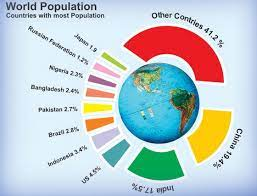

In this Project, we Explored Netflix data to uncover trends, content preferences, and insights using data analysis and visualization techniques with various python libraries.

Supermart Sales Analysis: Leveraging Excel and Power BI to dissect sales data, spot trends, and empower data-driven decisions for business growth.
Customer Call List Analysis: Using Python to categorize and prioritize contact requests from paying and non-paying customers for efficient outreach.

World Population Analysis: Utilizing Python libraries in jupyter notebook to explore global population trends, highlighting the most and least populated regions for data-driven insights.
UEFA Champions League Analysis: Leveraging Python for data insights, Tableau for visualizations to uncover trends, player performance, and match outcomes in this prestigious football competition.
- © 2024 Sci-Analyst Cornel. All rights reserved.
- Design: Pexels